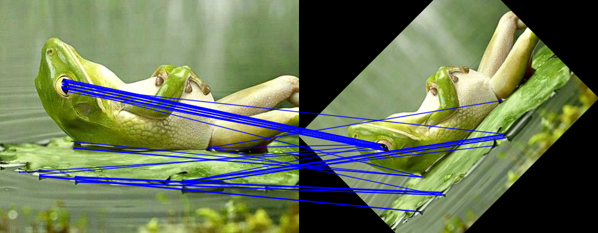

| Safe Haskell | None |
|---|---|
| Language | Haskell2010 |
OpenCV.Features2d
- data Orb
- data OrbScoreType
- data WTA_K
- data OrbParams = OrbParams {
- orb_nfeatures :: !Int32
- orb_scaleFactor :: !Float
- orb_nlevels :: !Int32
- orb_edgeThreshold :: !Int32
- orb_firstLevel :: !Int32
- orb_WTA_K :: !WTA_K
- orb_scoreType :: !OrbScoreType
- orb_patchSize :: !Int32
- orb_fastThreshold :: !Int32
- defaultOrbParams :: OrbParams
- mkOrb :: OrbParams -> Orb
- orbDetectAndCompute :: Orb -> Mat (S [height, width]) channels depth -> Maybe (Mat (S [height, width]) (S 1) (S Word8)) -> CvExcept (Vector KeyPoint, Mat D D D)
- data SimpleBlobDetector
- data SimpleBlobDetectorParams = SimpleBlobDetectorParams {
- blob_minThreshold :: !Float
- blob_maxThreshold :: !Float
- blob_thresholdStep :: !Float
- blob_minRepeatability :: !Int32
- blob_minDistBetweenBlobs :: !Float
- blob_filterByArea :: !(Maybe BlobFilterByArea)
- blob_filterByCircularity :: !(Maybe BlobFilterByCircularity)
- blob_filterByColor :: !(Maybe BlobFilterByColor)
- blob_filterByConvexity :: !(Maybe BlobFilterByConvexity)
- blob_filterByInertia :: !(Maybe BlobFilterByInertia)
- data BlobFilterByArea = BlobFilterByArea {
- blob_minArea :: !Float
- blob_maxArea :: !Float
- data BlobFilterByCircularity = BlobFilterByCircularity {}
- data BlobFilterByColor = BlobFilterByColor {
- blob_blobColor :: !Word8
- data BlobFilterByConvexity = BlobFilterByConvexity {}
- data BlobFilterByInertia = BlobFilterByInertia {}
- defaultSimpleBlobDetectorParams :: SimpleBlobDetectorParams
- mkSimpleBlobDetector :: SimpleBlobDetectorParams -> SimpleBlobDetector
- blobDetect :: SimpleBlobDetector -> Mat (S [height, width]) channels depth -> Maybe (Mat (S [height, width]) (S 1) (S Word8)) -> CvExcept (Vector KeyPoint)
- class DescriptorMatcher a where
- drawMatches :: Mat (S [height, width]) channels depth -> Vector KeyPoint -> Mat (S [height, width]) channels depth -> Vector KeyPoint -> Vector DMatch -> DrawMatchesParams -> CvExcept (Mat (S [D, D]) channels depth)
- data BFMatcher
- newBFMatcher :: NormType -> Bool -> IO BFMatcher
- data FlannBasedMatcher
- data FlannIndexParams
- = FlannKDTreeIndexParams { }
- | FlannLshIndexParams {
- tableNumber :: Int
- keySize :: Int
- multiProbeLevel :: Int
- data FlannSearchParams = FlannSearchParams {}
- data FlannBasedMatcherParams = FlannBasedMatcherParams {}
- newFlannBasedMatcher :: FlannBasedMatcherParams -> IO FlannBasedMatcher
ORB
data OrbScoreType Source #
Constructors
| HarrisScore | |
| FastScore |
Constructors
| OrbParams | |
Fields
| |
Arguments
| :: Orb | |
| -> Mat (S [height, width]) channels depth | Image. |
| -> Maybe (Mat (S [height, width]) (S 1) (S Word8)) | Mask. |
| -> CvExcept (Vector KeyPoint, Mat D D D) |
Detect keypoints and compute descriptors
Example:
orbDetectAndComputeImg
:: forall (width :: Nat)
(height :: Nat)
(channels :: Nat)
(depth :: *)
. (Mat (ShapeT [height, width]) ('S channels) ('S depth) ~ Frog)
=> Mat (ShapeT [height, width]) ('S channels) ('S depth)
orbDetectAndComputeImg = exceptError $ do
(kpts, _descs) <- orbDetectAndCompute orb frog Nothing
withMatM (Proxy :: Proxy [height, width])
(Proxy :: Proxy channels)
(Proxy :: Proxy depth)
white $ \imgM -> do
void $ matCopyToM imgM (V2 0 0) frog Nothing
forM_ kpts $ \kpt -> do
let kptRec = keyPointAsRec kpt
circle imgM (round <$> kptPoint kptRec :: V2 Int32) 5 blue 1 LineType_AA 0
where
orb = mkOrb defaultOrbParams

BLOB
data SimpleBlobDetector Source #
Instances
data SimpleBlobDetectorParams Source #
Constructors
| SimpleBlobDetectorParams | |
Fields
| |
data BlobFilterByArea Source #
Constructors
| BlobFilterByArea | |
Fields
| |
Instances
data BlobFilterByColor Source #
Constructors
| BlobFilterByColor | |
Fields
| |
Instances
data BlobFilterByConvexity Source #
Constructors
| BlobFilterByConvexity | |
Fields
| |
Instances
Arguments
| :: SimpleBlobDetector | |
| -> Mat (S [height, width]) channels depth | Image. |
| -> Maybe (Mat (S [height, width]) (S 1) (S Word8)) | Mask. |
| -> CvExcept (Vector KeyPoint) |
Detect keypoints and compute descriptors
DescriptorMatcher
class DescriptorMatcher a where Source #
Minimal complete definition
Methods
upcast :: a -> BaseMatcher Source #
Arguments
| :: a | |
| -> Mat D D D | Query set of descriptors. |
| -> Mat D D D | Train set of descriptors. |
| -> Maybe (Mat (S [height, width]) (S 1) (S Word8)) | Mask specifying permissible matches between an input query and train matrices of descriptors.. |
| -> IO (Vector DMatch) |
Arguments
| :: a | |
| -> Mat D D D | Query set of descriptors. |
| -> Maybe (Mat (S [height, width]) (S 1) (S Word8)) | Mask specifying permissible matches between an input query and train matrices of descriptors.. |
| -> IO (Vector DMatch) |
Match in pre-trained matcher
drawMatches :: Mat (S [height, width]) channels depth -> Vector KeyPoint -> Mat (S [height, width]) channels depth -> Vector KeyPoint -> Vector DMatch -> DrawMatchesParams -> CvExcept (Mat (S [D, D]) channels depth) Source #
BFMatcher
Brute-force descriptor matcher
For each descriptor in the first set, this matcher finds the closest descriptor in the second set by trying each one. This descriptor matcher supports masking permissible matches of descriptor sets.
Example:
bfMatcherImg
:: forall (width :: Nat)
(width2 :: Nat)
(height :: Nat)
(channels :: Nat)
(depth :: *)
. ( Mat (ShapeT [height, width]) ('S channels) ('S depth) ~ Frog
, width2 ~ (*) width 2
)
=> IO (Mat (ShapeT [height, width2]) ('S channels) ('S depth))
bfMatcherImg = do
let (kpts1, descs1) = exceptError $ orbDetectAndCompute orb frog Nothing
(kpts2, descs2) = exceptError $ orbDetectAndCompute orb rotatedFrog Nothing
bfmatcher <- newBFMatcher Norm_Hamming True
matches <- match bfmatcher
descs1 -- Query descriptors
descs2 -- Train descriptors
Nothing
exceptErrorIO $ pureExcept $
withMatM (Proxy :: Proxy [height, width2])
(Proxy :: Proxy channels)
(Proxy :: Proxy depth)
white $ \imgM -> do
matCopyToM imgM (V2 0 0) frog Nothing
matCopyToM imgM (V2 width 0) rotatedFrog Nothing
-- Draw the matches as lines from the query image to the train image.
forM_ matches $ \dmatch -> do
let matchRec = dmatchAsRec dmatch
queryPt = kpts1 V.! fromIntegral (dmatchQueryIdx matchRec)
trainPt = kpts2 V.! fromIntegral (dmatchTrainIdx matchRec)
queryPtRec = keyPointAsRec queryPt
trainPtRec = keyPointAsRec trainPt
-- We translate the train point one width to the right in order to
-- match the position of rotatedFrog in imgM.
line imgM
(round <$> kptPoint queryPtRec :: V2 Int32)
((round <$> kptPoint trainPtRec :: V2 Int32) ^+^ V2 width 0)
blue 1 LineType_AA 0
where
orb = mkOrb defaultOrbParams {orb_nfeatures = 50}
width = fromInteger $ natVal (Proxy :: Proxy width)
rotatedFrog = exceptError $
warpAffine frog rotMat InterArea False False (BorderConstant black)
rotMat = getRotationMatrix2D (V2 250 195 :: V2 CFloat) 45 0.8

Arguments
| :: NormType |
|
| -> Bool | If it is false, this is will be default |
| -> IO BFMatcher |
FlannBasedMatcher
data FlannBasedMatcher Source #
Flann-based descriptor matcher.
This matcher trains flann::Index_ on a train descriptor collection and calls it
nearest search methods to find the best matches. So, this matcher may be faster
when matching a large train collection than the brute force matcher.
FlannBasedMatcher does not support masking permissible matches of descriptor
sets because flann::Index does not support this.
Example:
fbMatcherImg
:: forall (width :: Nat)
(width2 :: Nat)
(height :: Nat)
(channels :: Nat)
(depth :: *)
. ( Mat (ShapeT [height, width]) ('S channels) ('S depth) ~ Frog
, width2 ~ (*) width 2
)
=> IO (Mat (ShapeT [height, width2]) ('S channels) ('S depth))
fbMatcherImg = do
let (kpts1, descs1) = exceptError $ orbDetectAndCompute orb frog Nothing
(kpts2, descs2) = exceptError $ orbDetectAndCompute orb rotatedFrog Nothing
fbmatcher <- newFlannBasedMatcher (def { indexParams = FlannLshIndexParams 20 10 2 })
matches <- match fbmatcher
descs1 -- Query descriptors
descs2 -- Train descriptors
Nothing
exceptErrorIO $ pureExcept $
withMatM (Proxy :: Proxy [height, width2])
(Proxy :: Proxy channels)
(Proxy :: Proxy depth)
white $ \imgM -> do
matCopyToM imgM (V2 0 0) frog Nothing
matCopyToM imgM (V2 width 0) rotatedFrog Nothing
-- Draw the matches as lines from the query image to the train image.
forM_ matches $ \dmatch -> do
let matchRec = dmatchAsRec dmatch
queryPt = kpts1 V.! fromIntegral (dmatchQueryIdx matchRec)
trainPt = kpts2 V.! fromIntegral (dmatchTrainIdx matchRec)
queryPtRec = keyPointAsRec queryPt
trainPtRec = keyPointAsRec trainPt
-- We translate the train point one width to the right in order to
-- match the position of rotatedFrog in imgM.
line imgM
(round <$> kptPoint queryPtRec :: V2 Int32)
((round <$> kptPoint trainPtRec :: V2 Int32) ^+^ V2 width 0)
blue 1 LineType_AA 0
where
orb = mkOrb defaultOrbParams {orb_nfeatures = 50}
width = fromInteger $ natVal (Proxy :: Proxy width)
rotatedFrog = exceptError $
warpAffine frog rotMat InterArea False False (BorderConstant black)
rotMat = getRotationMatrix2D (V2 250 195 :: V2 CFloat) 45 0.8

data FlannIndexParams Source #
Constructors
| FlannKDTreeIndexParams | |
| FlannLshIndexParams | |
Fields
| |
Instances
data FlannSearchParams Source #
Instances